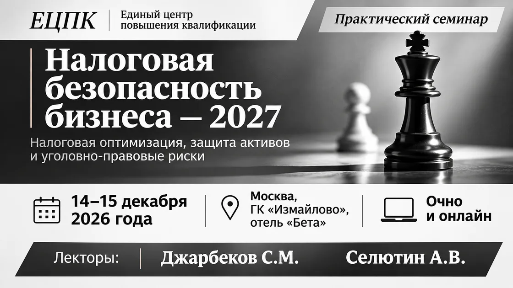
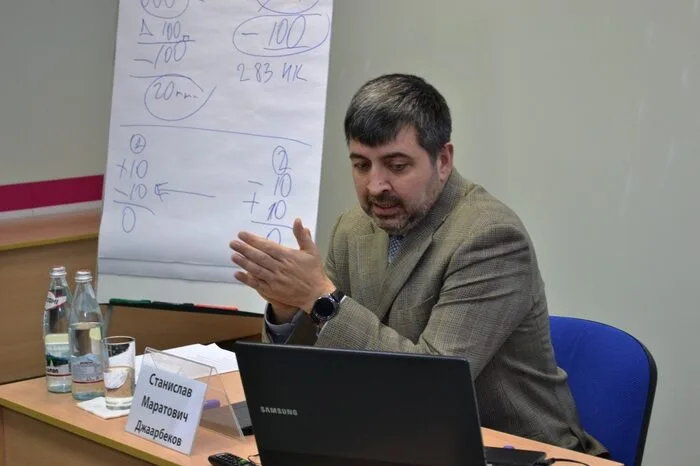

Налоговая оптимизация, защита активов и уголовно-правовые рискисобственников и руководителей
Направим счёт или свяжемся для уточнения деталей

Налоговая оптимизация и безопасное налоговое планирование на 2027 ГОД
Уголовная ответственность за налоговые преступления

Налоговый консультант. Член научно-экспертного совета Палаты налоговых консультантов России.
Адвокат
Кандидат юридических наук. Доцент. Судья в отставке (в прошлом работал в МВД, федеральным и мировым судьей). Коллегия адвокатов «Селютин и партнеры».
Во все варианты входят
Именной сертификат
14-15 декабря, Москва, ГК «Измайлово», отель «Бета». Направим счёт или свяжемся для уточнения деталей.
Выбрано: Очное участие 2 дня, 42 900 ₽
Выбрано: Онлайн участие 2 дня, 29 900 ₽
Выбрано: Доступ к видеозаписи семинара 2 дня, 25 900 ₽